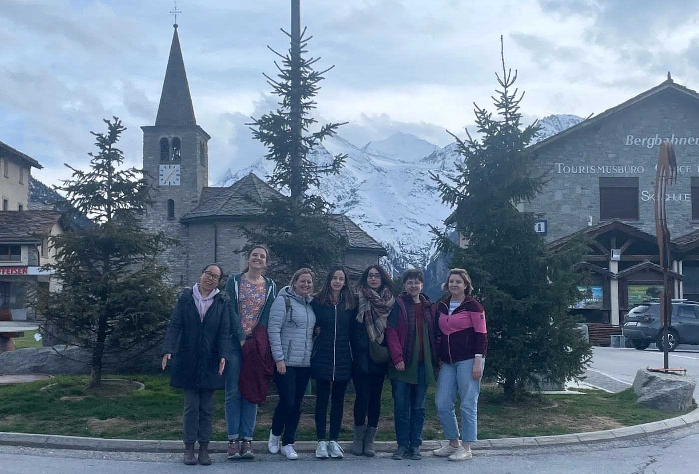

Event report
Spring retreat and mental health workshop in Grächen, May 2024
In May 2024 our pod members got together for a weekend to catch up, meet new members and learn about mental health and wellbeing in academia.
This was our second pod retreat. The first, back in 2021, featured workshops on negotiation skills, emotional management, and power dynamics. We knew that we wanted to host another workshop which would both educate and empower our members. We decided to learn about mental health, an issue which intersects with other key issues we care about such as gender roles, power dynamics and labour practices and also disproportionately affects academics.

To teach us about this topic, we were joined at our retreat by Olga Vvedenskaya, MD PhD, of the non-profit organisation Dragonfly Mental Health. Through a day of interactive workshops and in-depth discussions, she taught us about common mental health conditions and their prevalence in academia, the impostor phenomenon, and the concept of managing upwards and advocating for ourselves.
Read what some of the participants thought about our reatreat and workshop:
We spent two great days learning about Mental Health issues in academia and how to deal with them. We also had time for networking and getting to know other pod members while enjoying the beautiful location in Valais. - Ana, pod member |
We spent two rewarding days in the beautiful Valais. Talking openly about mental health allowed us to see how important it is to normalise this conversation with friends and colleagues. Most of us are struggling and we don't have to do it alone! - Andrea, pod member |
I was happy to spend some time with the other pod members and catch up in such a sunny spot! The topic of mental health in academia and research is so important as we are extremely likely to repeatedly come in contact with it as colleagues, employers or are even affected ourselves. It is so important to learn about the incidence of mental health problems, and to have a bit more knowledge of what to do in case of a crisis and how to help others. The more this topic is demystified and also destigmatized, the more inclusive we can shape our work culture. - Claudia, pod member |
I really enjoyed spending time with the other pod members in a beautiful location, away from all the noise and stress of our daily lives. The workshops taught me a lot, but I think the main thing I learned is the value of our community and how much I can learn from talking openly with friends and colleagues. - Lucia, pod member |
I had the pleasure of hosting talks on 'Mental Health in Academia', 'Imposter Phenomenon', and a workshop 'Managing Upwards' at a weekend retreat of 500 women scientists in the beautiful town of Grächen, Switzerland. The community was incredibly welcoming and engaging, creating an open and supportive environment that was perfect for meaningful discussions. It was truly a wonderful experience that I thoroughly enjoyed. -Olya, speaker |
It was a really amazing time we had together in this retreat in beautiful Valais. Learning about the importance of mental health especially for scientists was eye opening and extremely helpful. I am really glad to get to know all the other pod members in person. We spent time in plenty of fruitful discussions and exchange of ideas about the next steps of 500WS. I look forward to working together to build a strong community with our fellow female scientists. - Dede, pod member |
We are grateful to the University of Bern for the funding of the Promotion Fund Grant which made this experience possible.